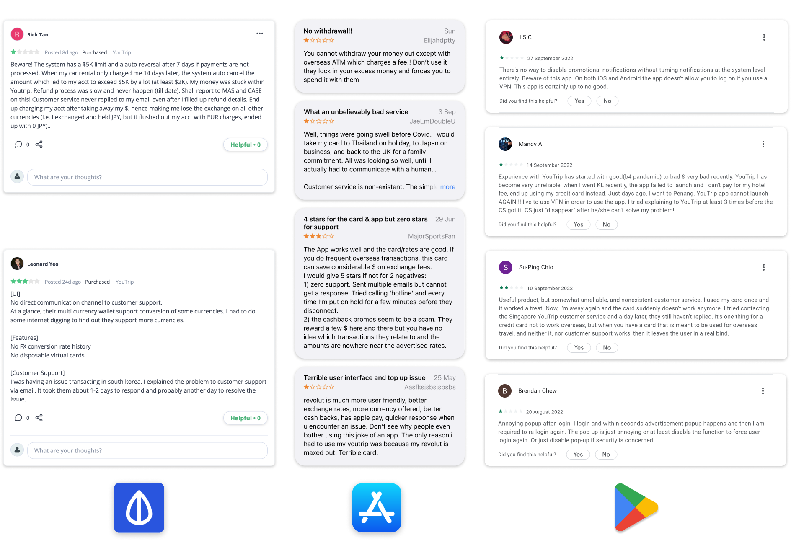
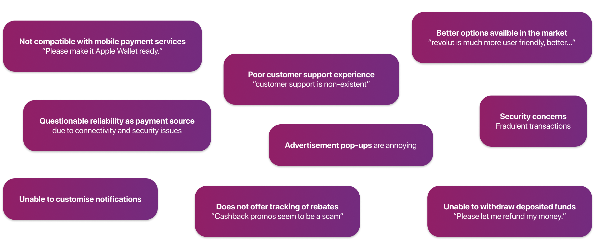
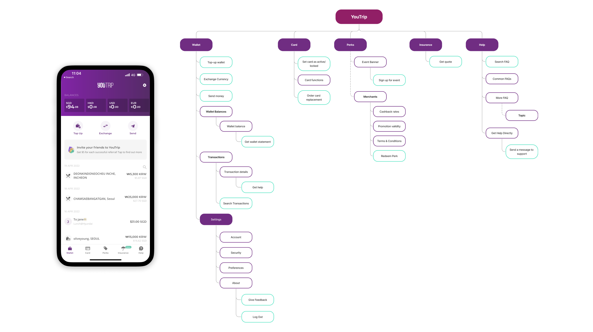
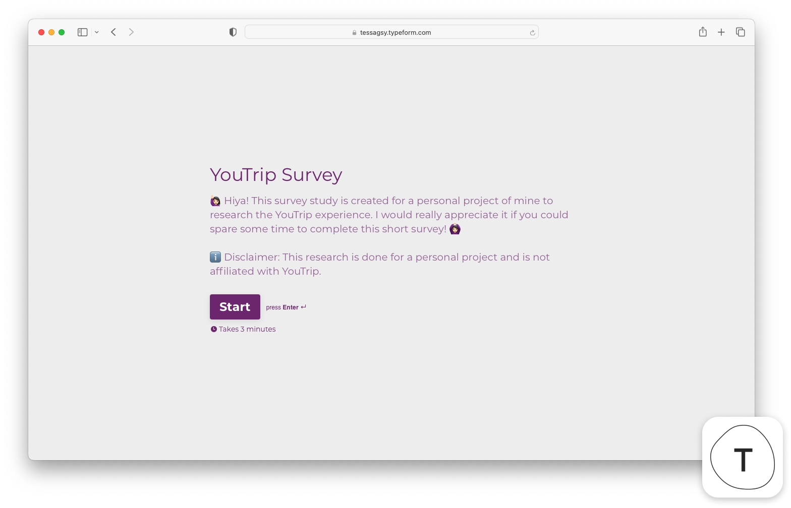
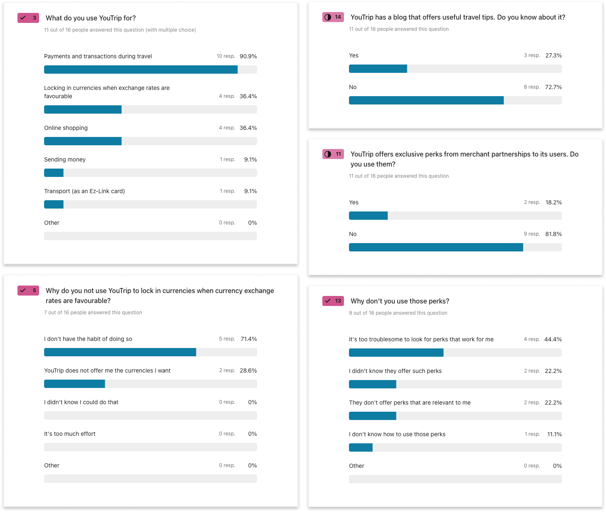
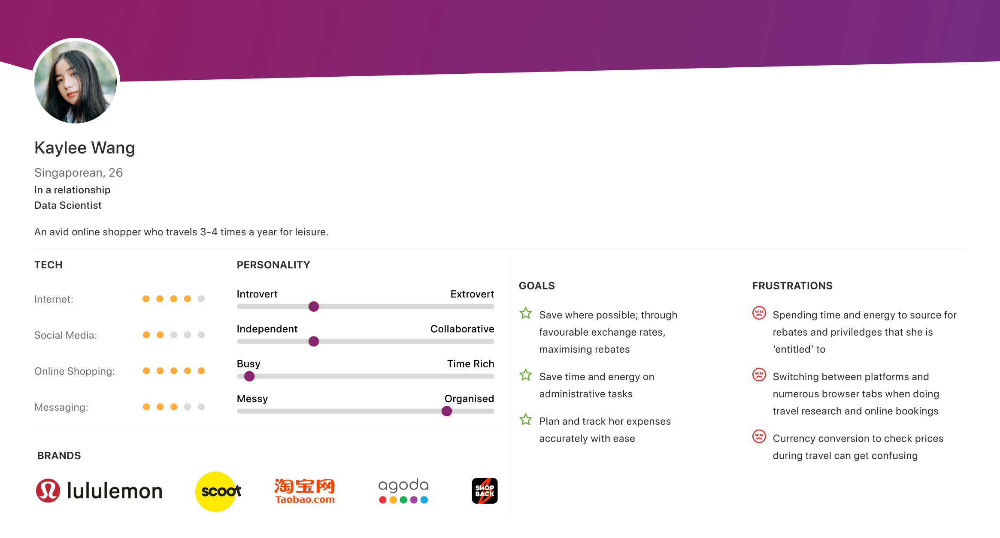
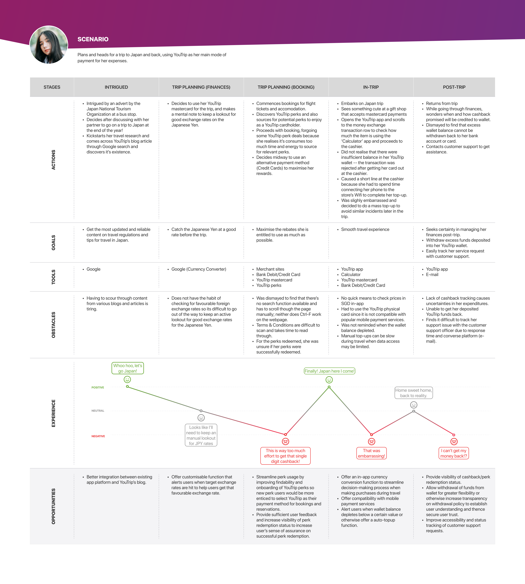
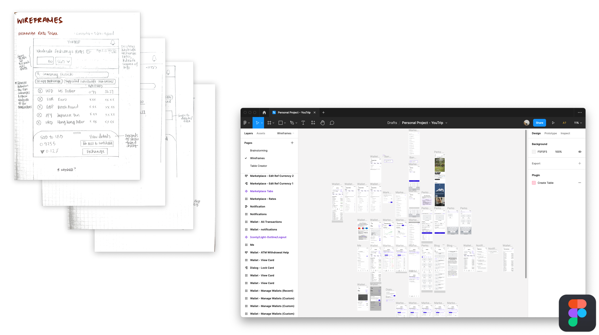
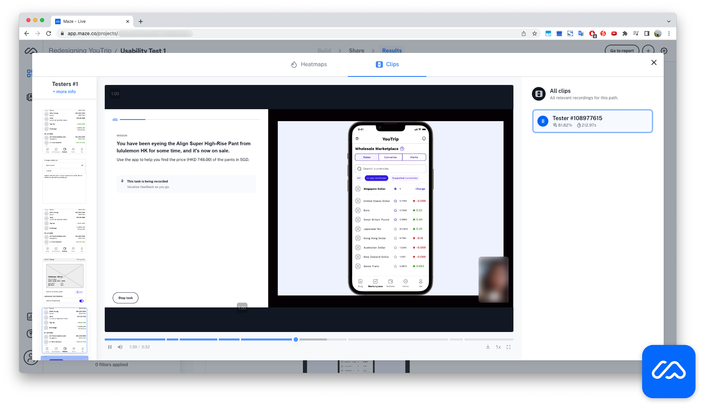
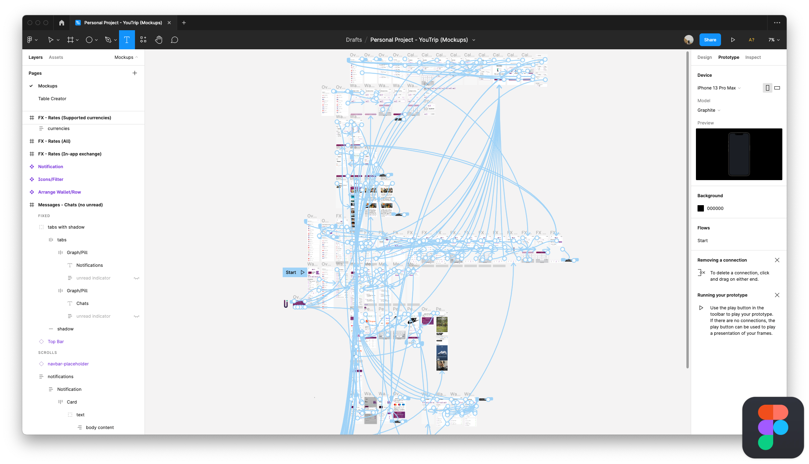

Improving a Multi-Currency Wallet

Overview
YouTrip is Singapore's first multi-currency wallet that allows its cardholders to pay in more than 150 currencies, without worrying about any hidden fees. It promotes itself as a means for its users to lock in competitive forex rates conveniently and eliminates the need to perform money exchange at money changers as it allows easy cash withdrawal overseas.The YouTrip app has been stagnating, with few improvements to the app since it started in 2018. For this personal project, I did research on how the YouTrip experience might be lacking compared to its competitors and added new features to the mobile platform to improve its competitiveness in the booming digital multi-currency account industry.
Scope
Personal ProjectYear
2022Problem
The YouTrip app has been stagnating, with few improvements to the app since it started four years ago. With a business model that mainly profits through cross-border transactions, it is likely the business suffered a heavy blow with the travel ban during the COVID-19 pandemic.
It is little surprise, therefore, that YouTrip introduced Perks - exclusive privileges in the form of discounts and rebates with partner merchants for its cardholders to encourage transactions using their Mastercard. More recently, they have also partnered with HL Assurance, a local insurance company, to offer discounted insurance plans for YouTrip travellers.
However, even as an avid YouTrip user myself, I find these newly introduced features difficult to use due to their poor usability.
From word of mouth, I understand the company places significant investments in their marketing efforts. YouTrip has a blog and Telegram channel that the marketing team updates frequently. However, they offer their customers only disjointed access to this marketing content.
There has also been an increasing number of competitors that have entered the Singapore market since, which begs an improvement in the YouTrip app to ensure it stays competitive and retains its market share in the long run.
💜 Disclaimer
I am not affiliated with YouTrip and this redesign was done completely of my own volition.Online Reviews
To verify that I was not the only user who thought YouTrip experience could be further improved, I looked at user reviews available online for data.

It also sits relatively high with scores of 4.3 and 4.0 on the Apple Store and Google Play Store respectively
YouTrip has a relatively high review score on the various review boards. However, inspection reveals recent reviews are not doing as well.

Common feedback observed can be summarised as such:

Competitive Analysis
To understand the competitors that YouTrip was up against, I did a simple competitive analysis of other multi-currency accounts available in the market:

It is clear from this simple feature comparison that YouTrip mainly appeals to potential customers as a free multi-currency wallet for convenient travel payments during travel.
Heuristics Evaluation
To identify issues with the existing app, I assessed its information architecture and did a round of heuristics evaluation on the user interface.

The YouTrip app consists of five tabs in the navbar and a settings page that allows the configuration of account information and app settings. It has an interface that is straightforward to navigate and simple to use. However,
- it offers little convenience to its users.
- As a product that allows its user to ‘Lock in competitive exchange rates, it does not offer a glossary view of forex rates. Rather, a user would have to swipe to each of the 10 supported currencies to view the current exchange rate. This is highly inconvenient for users (like myself) who do not have the habit (and thus use any existing tools) of keeping a lookout for favourable currency rates.
- In addition, when using the app for making purchases in other currencies apart from the 10 in-app exchange currencies supported, there is no convenient way to check the current exchange rate in-app. As usual, Google is the best companion.
- it lacks customisability
- The app arranges all wallets from left to right by most recent to least recently accessed. It does not allow users to customise their wallet view so the user can easily access currency wallets that matter more quickly.
- its information architecture could be improved
- The information architecture of the app could also be re-organised. For instance, the Card tab takes up precious space in the navbar but provides little additional useful information and control to users. The discounted insurance plan offered occupies a separate tab on its own in the navbar, even though it is also a Perk offered to the users, in partnership with HL Insurance.
- some of its functions have poor discoverability
- Certain functions like Search for transactions also have poor discoverability. There are also instances of poor contrast resulting in poor legibility due to the adherence to branding colours.
User Research
To validate these issues identified, I conducted an online survey with 16 YouTrip users using Typeform.


What I found was as follows:
- As expected, users mainly used YouTrip during travel, only a small percentage for online shopping.
- Most users did not have a habit of keeping a lookout for favourable currency rates and thus were unlikely to use YouTrip to ‘lock’ in on favourable exchange rates.
- Before making purchases with YouTrip, users generally head to Google to check and convert prices to SGD.
- The onboarding and findability of Perks can be improved to encourage usage.
- Despite their strong marketing efforts, 72.7% of users did not know that YouTrip has a blog.
User Persona and Journey Mapping
I summarised all my research findings in the form of a user persona and mapped out the experience of using YouTrip as the main mode of payment for a travel trip to better identify opportunities for improvement.


Ideation
As always, ideation began on pen and paper, before moving on to a digital prototyping tool.

Usability Testing
I began testing my low-fi designs by using Maze as the platform for unmoderated remote usability testing, making sure to use convincing placeholder data in my wireframes. I got about five users to test my preliminary design.

Findings & Insights
- The discoverability of new tabs in the navbar could be improved.
- User onboarding in the form of overlays can potentially alleviate this.
- The term ‘Marketplace’ was also not intuitive to the users.
- Users tend to skip ahead of reading ‘How to’ when redeeming their perks.
- Dialogue prompts for first-time perk users can help.
With these findings & insights in mind, I improved upon my designs as I worked on the hi-fidelity prototypes.

The Solution
Several feature additions and improvements been added to improve the overall experience of the app, with the following highlights:
Real-Time Exchange Rate Table and Converter
A new feature addition that
- streamlines price checking and decision-making process during travel or while making online purchases
- helps differentiate between in-app exchange currencies and other supported currencies
Calculator
Another new feature addition complementing the in-app real-time exchange rate table and converter above that
- also streamlines price checking and decision-making process during travel
- help in expense tabulation and encourage ATM withdrawal
Improved Perks
Proposed improvements to existing YouTrip Perks that
- makes it easier to search for perks by categorising priviledges available and offering a search function
- offers visibility on cashback status through 'Accumulated Perks'
- improves onboarding to encourage usage
Takeaways
Project Learnings
- Always set the expectations of participants in a usability test if you can do so yourself: It was my first time conducting a usability test in an unmoderated, remote environment. Even when using an established tool for the usability test, one should always stage the environment and set the expectations when you can do it personally.
What could be done better
- Limited access to YouTrip users: <20 users involved in the survey, and are mostly tech-savvy working adults; in the same target group
- Usability Testing
- Maze is on desktop and YouTrip is a mobile app
- Unmoderated usability testing has its drawbacks as you are not personally with the participant as they work through their tasks.
Areas for further development
-
Reliability of payments: Visibility of payment status for transactions could be improved to raise trust in the service. However, more in-depth information would be necessary to build on the solution.
-
Security Issues and Customer support: Internal issues that are beyond my control without more information but are critical to the overall YouTrip experience.